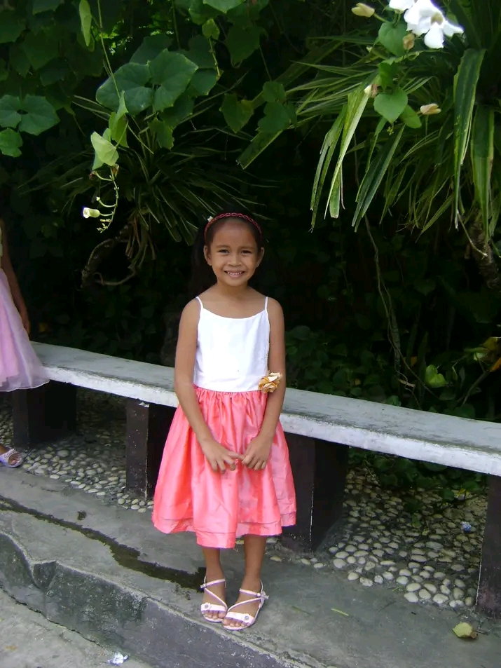

Hello. My full name goes Zandrea Kay B. Lu. My pen name is Kaki. No has ever called me Kaki before actually, except for this little cousin of mine whom I saw the first time. I am 19 years of age, turning 20 this October 30th. I was born on year 2004. In my family, we're only two sisters.
I am the middle child. I always assume as the middle child, not the youngest one for reasons that I was supposed to have a little brother and
I refuse to take his place. He died as a premature baby. It's a shame. I've always wanted to have a younger brother or sister. Enough of that.
I enjoy a lot of things, really. I am fond of books ever since I was 12 years old. A dear friend recommended and insisted that I read a story she was hooked upon.
That's how my love for reading began. Can you imagine life without the gift of imagination? I could not! There was this book I read years ago which inspired me to become a pilot. Initially, I wanted to become an astronaut but that was quite ambitious. I love space.
I love its intrigue, its complexities, and the mysteries it holds. Sometimes whenever I get extremely aware of my existence, it can feel overwhelming and in such cases, I stargaze and all my worries go away. Simply put, I find solace in the enormity of the universe.
Anyway after I gave up about that astronaut dream, for so long, I aspired maneuvering planes or aircrafts and soaring across the skies, being as free as the birds. I want a free life after all. However, one needs to be financially capable to secure
the licenses required. That is why the younger me decided that I pursue any degree that would guarantee financial freedom, and now I'm stuck in BSIT. It's fine though. Life doesn't end just because of a misfortune.